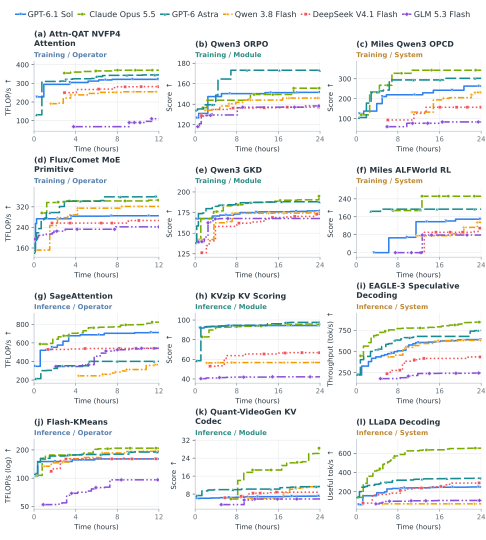
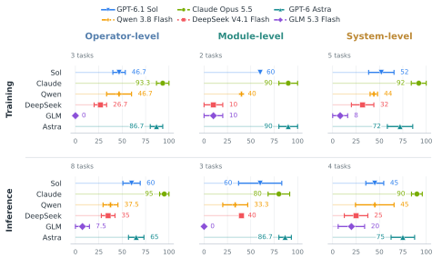
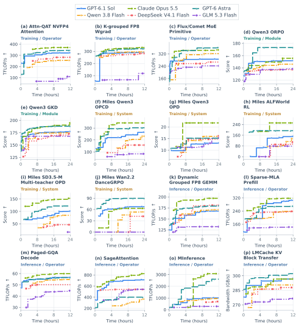
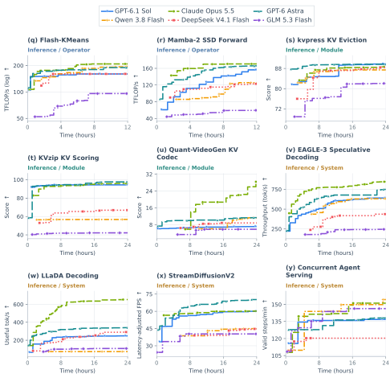

Main Results
Six models optimize 25 tasks over 12–24 hours. Claude Opus 5.5 leads with 17 task wins.
Experimental setup
We evaluate GPT-6.1 Sol, Claude Opus 5.5, Qwen 3.8 Flash, DeepSeek V4.1 Flash, GLM 5.3 Flash, and GPT-6 Astra on every task, yielding 150 task–model runs. Claude uses Claude Code; the other five models use Codex CLI. Reasoning effort is set to max.
Experiments use NVIDIA H100 GPUs with 80 GB per GPU. Operators receive 12-hour budgets; modules and systems receive 24 hours. We report the best valid private-test score within each run’s budget. The main-experiment allocation totals 10,512 GPU-hours, including Work, the continuously allocated Judge, and dedicated serving backends.
Performance over time
Performance on 12 tasks

Progress after long plateaus
51 of 150 runs set a new best score after at least a quarter of their budget without improvement. In 29 of those runs, the new score is more than 1% above the preceding best.
For Qwen on Quant-VideoGen KV Codec, the best score stays at 6.05 for 6.78 hours before rising to 8.58.
Statistics
A run contributes once to each plateau statistic. A long plateau lasts at least a quarter of the run’s budget; the larger-gain statistic requires a new best score more than 1% above the preceding best.
Final performance
Claude Opus 5.5 leads overall, with 17 task wins and a mean rank score of 91.2.
| # | Model | Rank score | Task wins |
|---|---|---|---|
| 1 | Claude Opus 5.5 | 91.2 | 17 / 25 |
| 2 | GPT-6 Astra | 75.2 | 6 / 25 |
| 3 | GPT-6.1 Sol | 54.4 | 1 / 25 |
| 4 | Qwen 3.8 Flash | 40.8 | 1 / 25 |
| 5 | DeepSeek V4.1 Flash | 30.4 | 0 / 25 |
| 6 | GLM 5.3 Flash | 8.0 | 0 / 25 |
Each task ranks the six models by its final valid score, with average ranks for exact ties. Rank score rescales the mean rank to 0–100 with equal task weights; 100 means first on every task.
Rank-based final performance

Strengths differ across tasks
Claude wins nine operators, two modules, and six systems. Astra wins six tasks; Sol and Qwen win one each. The three inference-module tasks have three different winners: Sol on kvpress KV Eviction, Astra on KVzip KV Scoring, and Claude on Quant-VideoGen KV Codec.
Astra has the highest mean rank score on inference modules, 86.7, compared with Claude’s 80.0. Qwen wins Concurrent Agent Serving at 154.33 valid steps/min, compared with Claude’s 151.17.
Complete task trajectories
View all 25 tasks and 150 runs
Complete trajectories: first task group

Complete trajectories: remaining tasks
